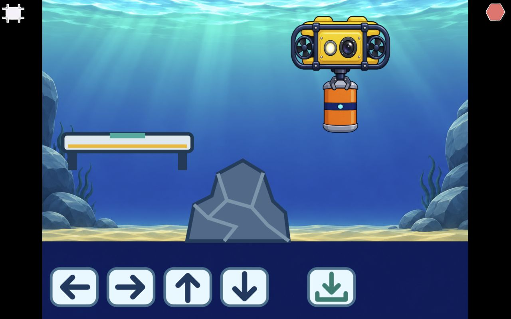
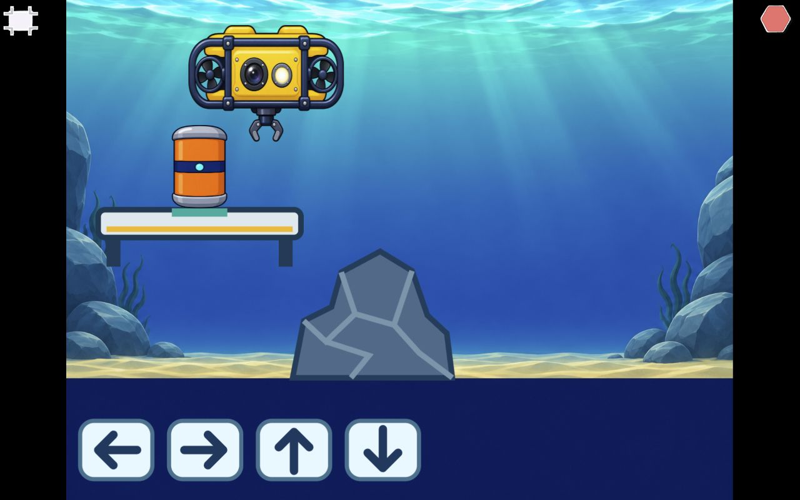

7-20 min
1. Telecomanda
Patru butoane, patru mesaje. Robotul face câte 2 pași orizontal și 1 pas vertical.
Lecția 08 · 60 de minute · robotică pe ecran
O capsulă cu măsurători a ajuns pe fundul mării. Îi construim robotului telecomanda, ocolim stânca și recuperăm capsula. Misiunea se încheie când capsula rămâne pe platformă, iar robotul poate pleca gol.
Proiect de pornire fără cod · SJR
Plan + toate programele cu capturi · PDF · Ghidul profesorului

Primele 7 minute: povestea, grila și planificarea traseului. Ultimele 3 minute: probă și salvare. Misiunea dificilă este pentru toți.
7-20 min
Patru butoane, patru mesaje. Robotul face câte 2 pași orizontal și 1 pas vertical.
20-32 min
Capsula se prinde la contact și apare sub clește. Primește aceleași comenzi de deplasare ca robotul.
32-47 min · dificil · pentru toți
Ocolim stânca, revenim cu încărcătura și depunem pe platformă. Robotul pleacă gol.
47-57 min · creație
Alt loc pentru capsulă și alt pas al telecomenzii. Schimbăm programele robotului și capsulei împreună.
Rezervă · +5-8 min
Normal când robotul este gol, lent când duce capsula. Aceeași distanță, altă durată.
Rezervă · +8-10 min
Un buton comandă returul. Săgețile dispar până după depunere, apoi pilotul poate prelua din nou controlul.
O singură capsulă în poveste, trei imagini în proiect: pe fund, sub clește și pe platformă. Mesajele le arată și ascund la momentul potrivit. Copia transportată primește aceleași deplasări ca robotul.
Stânca se ocolește vizual. Depune nu verifică automat poziția: copilul aliniază capsula cu marcajul platformei înainte să apese. Returul automat folosește traseul fix din exemplu.

PDF-ul are 19 pagini: plan concis, pregătire și capturi reale ale tuturor programelor, inclusiv firele neschimbate și ambele rezerve.
Ghid complet · PDF cu capturi · Lista proiectelor · PDF-ul cursului
Pe laptop, în ScratchJr Desktop Reborn: Open în galerie, alegi SJR-ul, apoi cardul submarinului. Steag pentru pornire, săgețile pe rând; Stop și Steag pentru reluare.
Pe tablete pregătești doar starterul înaintea orei. Verifică importul și redeschiderea pe un Lenovo al școlii. Instrucțiuni de import și utilizare.
Șapte proiecte importate și testate în browser: cele patru direcții, prinderea la contact, transportul, depunerea, plecarea fără capsulă, vitezele, returul automat, comenzile ascunse, resetarea și redeschiderea. Raport și dovezi.
Verificarea nu include un Lenovo fizic. Unele pictograme din portul web au necesitat reselectarea aceleiași culori/viteze; capturile PDF arată pictogramele complete.
Prezentare veche · Ghid vechi · PDF vechi · Cartonașe vechi · ZIP vechi.